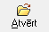

Kases avansa maksājums¶
Kases izdevumu ordera veids Kases avansa maksājums ir jāveido, kad tiek izmaksāta avansu nauda Avansu norēķinu personai . Dokumenta veida lietošana nodrošina izmaksāto avansu summu automatizētu uzskaiti Avansa norēķina dokumentā.Kases avansa maksājumsir uzskatāms par kases izdevumu orderi, tam ir iebūvēta kases izdevumu ordera izdrukas forma, un tas iekļaujas kopējā kases izdevumu orderu numerācijā.Kases avansa maksājumadokuments tiek vienlaicīgi parādīts Kases izdevumu un Avansu norēķinu dokumentu žurnālos. Darījuma atšifrēšanai pa finanšu (EK) kodiem, jāaizpilda dokumenta saturs. Lai dokumenta izdrukā parādītos grāmatojumu konti, dokuments pirms izdrukāšanas ir jāiegrāmato.
JaunaKases avansa maksājuma pievienošana¶
Lai uzskaitītu izmaksātās avansu summas, un tās parādītos avansu norēķinu dokumentā, izmaksājot avansu skaidrā naudā, dokuments ir jāveido kā Kases avansa maksājums. Dokumentā ir pieejams lauks Persona , kur no Partneru saraksta var izvēlēties personas, kuru aprakstā ir pazīme Avansu persona .
Izvēloties dokumenta veidu Kases avansa maksājums, tiks atvērts jauns logs:

Kases avansa maksājuma Virsraksta aizpildīšana¶
Lai aizpildītu Kases avansa maksājuma Virsrakstu, nepieciešams:
- Norādīt Uzņēmuma kasi, no kura šis maksājums tiks izpildīts:

- Izvēlēties Datumu, kurā šisKases avansa maksājums tiek veidots:

3.Ievadīt kopējo Kasesavansa maksājumasummu:

4. No saraksta izvēlēties nepieciešamo personu, kuras aprakstā ir pazīme Avansu persona , kurai šī skaidras naudas operācijatiks noformēta:

Aizpildot lauku Persona , lauks Pers.dok. tiks aizpildīts automātiski, pie nosacījuma, ja šie personas dati būs aizpildīti Partnera kartiņā:

Kases avansa maksājuma Satura aizpildīšana¶
Lai aizpildītu Kases avansa maksājuma Saturu, dokumenta satura daļā
nepieciešams nospiest  un tiks atvērts
operācijas satura logs, kurā nepieciešams aizpildīt satura ierakstus
(uzņēmumā izmantotās dimensijas) un norādīt satura ieraksta summu:
un tiks atvērts
operācijas satura logs, kurā nepieciešams aizpildīt satura ierakstus
(uzņēmumā izmantotās dimensijas) un norādīt satura ieraksta summu:
{kind=link}
 Dokumenta saturs var sastāvēt no vairākiem
satura ierakstiem, kas kopsummā veido Dokumenta Virsrakstā norādīto
summu.Pievienot nākamo satura ierakstu iespējams, satura daļā
nospiežot pogu .
Dokumenta saturs var sastāvēt no vairākiem
satura ierakstiem, kas kopsummā veido Dokumenta Virsrakstā norādīto
summu.Pievienot nākamo satura ierakstu iespējams, satura daļā
nospiežot pogu .
Kases avansa maksājuma Pamatojuma un Satura aizpildīšana¶
Kasesavansa maksājumalauki Pamatojums un Saturs tiek drukāti kases avansa maksājuma rindā Pamatojums.
Lauku Kases avansa maksājuma Pamatojums , iespējams aizpildīt manuāli vai izvēloties no Kases paskaidrojumu saraksta :
{kind=link}
Aktivizējot izvēli Saturs, laukā tiek salikti dokumenta satura finanšu (EK) kodi un summas, līdz ar to iespējams automatizēti iegūt informāciju par summas sadalījumu pa EK kodiem vai maksājuma PVN summu:
{kind=link}
Kases avansa maksājuma Pielikuma informācijas aizpildīšana¶
Lauku Pielikumā , Kases avansa maksājumam iespējams aizpildīt manuāli vai izvēloties no Kases pielikumu saraksta , laukā Piel.num. nepieciešams ierakstīt attiecīgā Pielikuma dokumenta numuru:

Kad visi nepieciešamie lauki ir aizpildīti, Kases avansa maksājums ir sagatavots un to ir iespējams:
1. Saglabāt,nospiežot pogu  -dokuments tiks
saglabāts un būs vienlaicīgi pieejams apskatei/labošanai/grāmatošanai
Kases izdevumu un Avansu norēķinu žurnālos.
-dokuments tiks
saglabāts un būs vienlaicīgi pieejams apskatei/labošanai/grāmatošanai
Kases izdevumu un Avansu norēķinu žurnālos.
2. Apstiprināt, nospiežot rīku joslā pogu  -Kases avansa maksājums tiks Apstiprināts un to būs iespējams
Grāmatot.
-Kases avansa maksājums tiks Apstiprināts un to būs iespējams
Grāmatot.
Kases avansa maksājuma grāmatošana¶
Lai dokumenta izdrukā parādītos grāmatojumu konti, dokuments pirms izdrukāšanas ir jāiegrāmato.
Kases avansa maksājumu iespējams grāmatot no atvērta Kases avansa maksājuma dokumenta vai izvēloties (iezīmējot)dokumentu Kases izdevumu vai Avansu norēķinu žurnālā.
Lai iegrāmatotu Kases avansa maksājumu, dokumentu nepieciešams
Apstiprināt, nospiežot rīku joslā pogu .
Apstiprinātu dokumentu ir iespējams grāmatot, nospiežot rīku joslā
pogu  .
.
Instrukcija - Dokumentu grāmatošanas principi
Pievienotā Kases avansa maksājuma labošana¶
Labojumus saglabātajādokumentā iespējams veikt atverot Kases avansa maksājumu, kurš vienlaicīgi pieejams apskatei/labošanai Kases izdevumu un Avansu norēķinu žurnālos. Lai veiktu labojumusKases avansa maksājumā,dokumentunepieciešams atvērt, izmantojot rīku joslas pogu  (ALT+A), unatvērtajāierakstā iespējams veiktnepieciešamos labojumus:
{kind=link}
{kind=link}
Pēc labojumu veikšanas, veiktā izmaiņas iespējams
vai  .
.